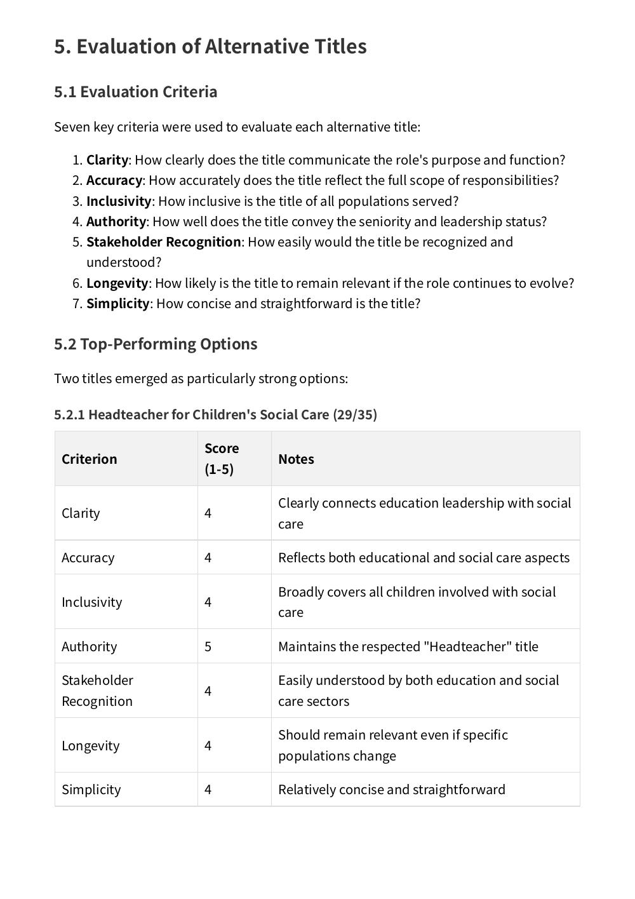
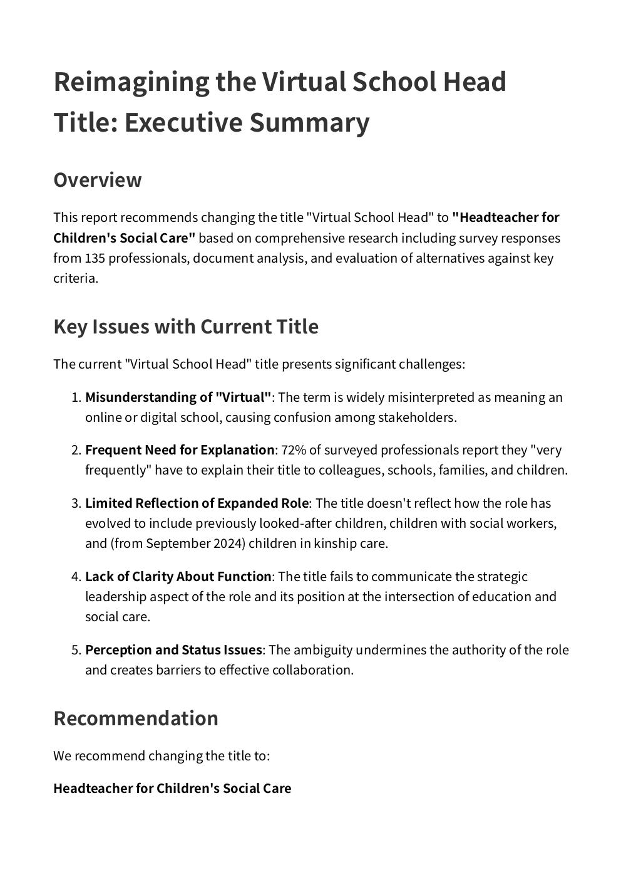

n
nNAVSH: a national co-design with Virtual School Heads on the future of their role
Virtual School Heads told us their title makes people think they run an online school. We ran a national co-design process with them, tested the options against clear criteria, and wrote up what they told us for NAVSH to take forward.

The starting point
The Virtual School Head role was created to improve the education of children in care. Since then it has grown to cover previously looked-after children, children with a social worker and, from 2024, children in kinship care. The title stayed the same. After the pandemic, “virtual” means online to most people, and Virtual School Heads were spending time explaining their job instead of doing it. NAVSH asked us to find out, with the people in the role, whether the title still works and what it should be instead.
What we heard
At the NAVSH annual conference in March 2025, around 200 delegates took part in our workshop. Each was then asked one question: what should the Virtual School Head be called? 73 answered. A four-week national survey followed and gathered 62 detailed responses. The word “Virtual” drew the most criticism: more than half said it causes confusion, with schools, families and even inspectors. The word they wanted to keep was “Head”, because schools understand it.
“Everyone thinks we run a digital school.”
What we did
- WorkshopTake the title apartDelegates designed new titles with their peers and gave us 73 answers
- ShortlistFour themesFrom strategic titles to values-led ones
- SurveyAsk the countryWhat the role does, who it serves, how often it needs explaining, and a ranking of the shortlist
- RecommendReport and pitchEvery option tested for clarity, authority, inclusivity and longevity, with a report, summary and co-branded pitch deck
How we worked
Start in the room
The first ideas came from around 200 people who do the job, not from us.
Test with the sector
The survey put a shortlist in front of Virtual School Heads across England and asked them to rank it.
Show the working
The report sets out every option we explored, what people liked about it and why it did or didn’t make the cut.
The recommendation came from the words people trusted, not a single ranked option. The two shortlisted titles that ranked best were Director of Learning and Achievement and Education Lead for Care-Experienced Children. But in open answers, “Headteacher” was the word professionals valued most, and “Children’s Social Care” covered everyone the role now serves. Before the report went to NAVSH, we asked a small group of Virtual School Heads to test it against their own experience.
What changed
A national picture of the role, in the words of the people who do it.
135 responses from Virtual School Heads and their teams shaped the recommendation. NAVSH now has a national evidence base to guide the future of the role.
NAVSH received the full report, a summary and a pitch deck to share with Virtual School Heads, local authorities and the Department for Education. The report asked all three to recognise Headteacher for Children’s Social Care as the sector’s preferred title. Virtual School leaders who reviewed it said it reflected their experience, and some wanted the title to go further and signal a more senior, system-wide role. The co-design gave NAVSH a clear, national picture of how the role is understood, in the words of the people who do it.
Read the report
The full report sets out how the co-design worked, what Virtual School Heads told us, and the options for NAVSH to consider. The summary covers the key findings in three pages.
See the work
Open any piece to look through it page by page.
Seven questions
Each option was scored 1 to 5 against each one. Choose a number.
The seven criteria
Does it say what the role does?
Does it reflect the full scope of the job?
Does it cover every child the role serves?
Does it carry the seniority of the role?
Would schools, social workers and families understand it straight away?
Will it still fit if the role keeps growing?
Is it short enough to say and remember?


One question
What should the Virtual School Head be called?
Every delegate was asked it at the end of the workshop. 73 answered.
What the national survey found

The word that causes the trouble
“Everyone thinks we run a digital school.”
54% criticised “Virtual”. It confuses schools, families and even inspectors, and the pandemic made it worse.
The word worth keeping
“Head”
54% valued it, because schools understand it and it signals seniority.
Four families of titles
- Strategic Director of Learning and Achievement, Strategic Education Lead
- Education and care Headteacher for Children’s Social Care, Education Lead for Care-Experienced Children
- Values-led Education Champion for Care-Experienced Children
- Integration Education and Social Care Integration Lead
Every option scored out of 35
- 29 Headteacher for Children’s Social Care
- 29 Head of Education for Care-Experienced Children
- 24 Strategic Education Lead for Vulnerable Children
- 23 Director of Learning and Achievement for Children with a Social Worker
- 23 Education Champion for Care-Experienced Children
The recommendation
Headteacher for Children’s Social Care
It keeps the word people trust, drops the word that confuses them, and covers every child the role now serves.


What NAVSH received
- Full report Every option explored, what people liked and why it did or didn’t make the cut
- Summary The key findings in three pages
- Pitch deck Co-branded, to share with Virtual School Heads, local authorities and the DfE
Tested before it went out
A small group of Virtual School Heads read the report against their own experience before it went to NAVSH.
They said it reflected what they live with. Some wanted a title that signals an even more senior, system-wide role.